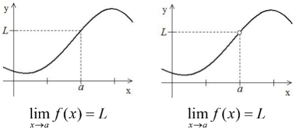
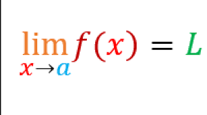
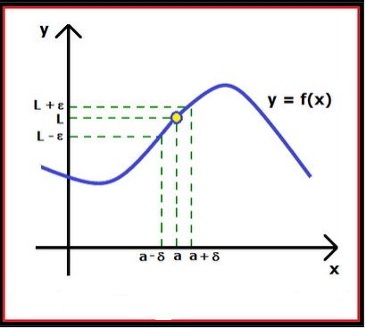

LIMITES
puntos hacen falta los valores de n parámetros llamados Coordenadas del Punto y que se representan por X1, X2, ..... Xn
ESPACIO AFIN Espacio AFIN de n dimensiones es el espacio entre cuyos puntos y los conjuntos de
n números reales cualesquiera X1, X2, ..... Xn llamados coordenadas del punto, se puede establecer una correspondencia biunívoca.
ESPACIO METRICO Es un Espacio AFIN en el cual se introduce la manera de medir la distancia entre dos puntos cualesquiera del mismo.
ESPACIO EUCLIDIANO Un Espacio es EUCLIDIANO y de dimensión n cuando : 1.- Es AFIN de dimensión n
2.- La distancia entre dos puntos cualesquiera del mismo está definida por :
Llamando d (A,B) a la distancia entre los puntos A y B del E2 se verifica que :
 
1) d (A,B) = 0 A = B
2) d (A,B) = d (B,A)
3) d (A,C) + d (C,B) ≥ d (A,B)
El espacio Euclidiano de n dimensiones se simboliza con En CONJUNTOS PUNTUALES EN E2
Disco abierto de centro A(a,b) y radio "r"
Es el conjunto de puntos del E2 tal que :
S = {P(x,y) / (x-a)2
+ (y-b)2
< r2 }
o sea la d (P,A) < r
a
b A
(
r
2
En el caso que sea menor o igual a r se tiene el disco cerrado Intervalo rectangular abierto
Es el conjunto de puntos P(x,y) perteneciente al E2 tal que S = {P(x,y)/ a < x < b ^ c < y < d }
En el caso de menor o igual se tiene el intervalo rectangular cerrado Entorno circular
Entorno circular del punto A(a,b) y radio r es el disco abierto de radio r y centro A(a,b) es decir es el conjunto de puntos del E2 / S = { P(x,y) / (x-a)2
+ (y-b)2
< r2 }
o sea la d(P,A) < r . Se simboliza con N (A,r)
Entorno circular reducido
Entorno circular reducido del punto A(a,b) y radio r es el disco abierto de radio r y centro A(a,b) excluyendo el punto A(a,b), es decir es el conjunto de puntos del
E
2 tal que : S = { P(x,y) / 0 < (x-a)2
+ (y-b)2
< r2 } o sea la 0 < d(P,A) < r
Se simboliza con N' (A,r)
Entorno rectangular
Entorno rectangular del punto A(a,b) y semiamplitud "d" es el conjunto de puntos P(x,y) del E2 tales que verifiquen :
| x - a | < d
| y - b | < d
Entorno rectangular reducido
Es el mismo que el anterior pero excluyendo el punto A(a,b) es decir es el conjunto de puntos P(x,y) del E2 tales que
0 < | x - a | < d
0 < | y - b | < d
CLASIFICACION DE PUNTOS
Punto aislado
Un punto de un conjunto se llama aislado cuando hay algún entorno suyo que no contiene otros puntos del conjunto que el mismo.
Por ejemplo si llamamos Z al conjunto de los números enteros, el conjunto definido por : S = { P(x,y) / x Z ^ y Z } está formado solamente por puntos aislados
Punto de acumulación
Un punto pertenezca o no a un conjunto S, se llama punto de acumulación de S,
cuando en todo entorno reducido suyo hay puntos del conjunto S.
Si definimos a S = { P(x,y) / (x)2 + (y)2
< 1 }
X
Y
c
d
a b
3
Todos los puntos de S son de acumulación y los de la circunferencia (x)2 + (y)2
= 1 también, ya que si bien no pertenecen a S en todo entorno suyo hay puntos que pertenecen a S
PAGINA DE APOYO SOBRE EL TEMA: LIMITES